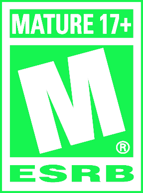

About me
Hello! My name is Diogo Antonny, and I am a software developer with over three years of experience in technology. I am currently studying Systems Analysis and Development at Impacta College. I am fluent in Brazilian Portuguese and English.
Passionate about technology, I am always improving my skills and looking for projects where I can contribute and continuously grow.

Skills
Projeto Amparo Ao RS
This web platform was developed to assist the population of Rio Grande do Sul during the floods that affected the state, as well as to provide an information channel for those who want to help.
HTML, CSS, NodeJS
VEL
A platform dedicated to improving the management of fast delivery companies, helping couriers and restaurants better control their businesses. Our goal is to offer a smoother road and clear directions to success!
React, AWS, JAVA, Spring Boot, MySQL, and Docker.Cemiterios e Crematorios Zona Sul
Landing page for a website about burial plots and crematoriums. Ranked first in searches for cemeteries or crematoriums in the southern zone.
HTML, CSS, Javascript, and SEO.CuboBank
Project focused on adjustments and improvements for an ATM with many functionalities and data caching.
HTML, CSS, and Javascript.
FreedonLents
Landing page with a design aimed at capturing user attention for a purchase, ensuring responsiveness across multiple screens and platforms.
HTML, CSS, and Javascript.
Dark Souls 3 Project
The website displays all the bosses from the game, providing a brief introduction and some of their characteristics.
HTML, CSS, and Javascript.Old School Comics
News website with a design inspired by old-school black and white cartoons, ensuring responsiveness across multiple screens and platforms.
HTML, CSS, and Javascript.
Academic Life
SYSTEMS ANALYSIS AND DEVELOPMENT
Impacta College
08/2024 to 12/2026
FULL-STACK JAVA DEVELOPER
Senac São Paulo - Instituto Proa
08/2024 to 12/2026
ELECTRONICS TECHNICIAN
Etec Aprígio Gonzaga
01/2020 to 12/2022
Award
Outstanding Student
PROA 2024
Professional Experiences
Software Development Intern - RB Investimentos
I worked in the company's development area, handling SQL queries, data scheduling, analyzing large volumes of information, and generating reports from SQL requests. Additionally, I participated in software and web application development, utilizing the MVC architecture and Microsoft technologies such as .NET and C#. I also contributed to implementing artificial intelligence in the company's processes, focusing on automation and innovation.
Full Stack Developer and Scrum Master - VEL
I worked as a Scrum Master in the Instituto PROA Demoday Project, organizing tasks, motivating the team, and using agile methodologies such as Scrum and the GUT Matrix. I managed information on Trello, conducted daily meetings in English, and promoted activities to strengthen the group. Besides management, I developed the front-end in React, assisted in creating APIs in Java with Spring Boot, and worked with MySQL databases.
Freelance Developer
Throughout my journey, I have worked directly with clients, developing landing pages and web pages that not only impress visually but also deliver results. I created 100% responsive, fast, and SEO-optimized websites, ensuring an exceptional user experience and high conversion rates.
IT Apprentice - Concentrix
I was responsible for VLAN management via DHCP, network point verification, and IT infrastructure organization. I worked on computer and user management, hardware and software maintenance, as well as task automation. I participated in bilingual meetings and handled tickets, formatting, and system installations.
Curiosities
Games
I am passionate about challenging games and I am a game developer. I intend to publish my own games one day.
Languages
I love studying and speaking foreign languages such as English and Mandarin. I dream of exploring the world.
Music
Music is a part of my life; I love listening to and playing music. It inspires and stimulates me.
Sports
I love practicing sports such as skateboarding, calisthenics, and swimming. It is an essential part of my life.